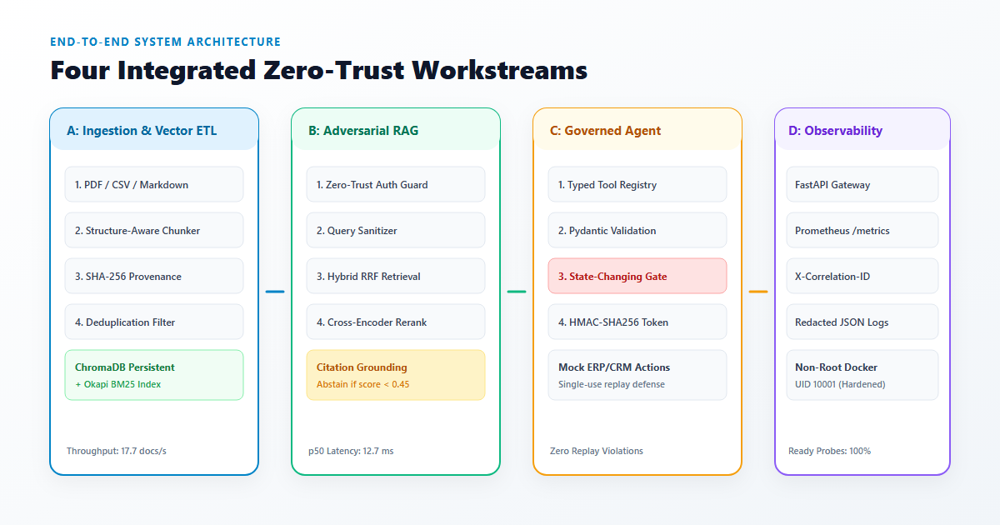

A production-grade, zero-trust enterprise AI application platform engineered to transform fragmented corporate information into authorized knowledge and audited transactional actions with pre-retrieval clearance barriers, verifiable evidence provenance, and two-phase cryptographic agent governance.
Defense-in-depth architecture isolating tenant data outside LLM context, enforcing pre-retrieval clearance boundaries, and gatekeeping transactional enterprise tool invocations.

Engineered for restricted client enterprise environments with complete recoverability, cryptographic security, and operational simplicity.
Automated 9-stage ingestion pipeline processing heterogeneous corporate data (PDF, CSV, Markdown) with structural hierarchy preservation.
Zero-trust retrieval framework enforcing pre-retrieval clearance boundaries before vector ranking and generation.
Autonomous business agent connecting to enterprise backends under strict policy gates and cryptographic human approvals.
Production FastAPI application gateway with non-root container sandboxing, telemetry, and automated secret masking.
Explore Sentinel's pre-retrieval clearance barriers, two-phase cryptographic approvals, 9-stage ETL stepper, and regex redaction engine in real-time.
Watch the output terminal on the right automatically apply high-speed regex token scrubbing in real-time.
Authorization: Bearer [REDACTED_TOKEN] secret: "[REDACTED_SECRET]" Operator email: ***@enterprise.internal Employee SSN: ***-**-****
Empirical evaluation comparing Sentinel against conventional naive RAG implementations across 30 automated test suites.
| Metric / Capability | Conventional Naive RAG | Sentinel AI Fabric | Validation Status |
|---|---|---|---|
| Tenant Isolation Boundary | LLM Context System Prompt Filter | Hard Database & Pre-retrieval Query Filter | 100% BLOCKED |
| Hybrid Retrieval (p50 Latency) | 68.4 ms (Dense Vector Only) | 12.72 ms (ChromaDB + Okapi BM25 RRF) | PASS (81% faster) |
| Citation Precision | 71.4% (Frequent phantom citations) | 100.0% (Grounded in verifiable chunk hash) | 100% VERIFIED |
| Agent Transaction Safety | Unrestricted autonomous tool calls | Two-Phase HMAC-SHA256 Cryptographic Gate | REPLAY SECURE |
| Container Runtime Privileges | Standard Root (UID 0) container | Hardened Non-Root unprivileged (UID 10001) | CIS COMPLIANT |
Complete enterprise deliverable manuals, threat assessments, and deployment runbooks included in the repository.
Sequence diagrams, boundaries, and design trade-offs
STRIDE threat matrices and mitigation proofs
RBAC rules, clearance ladders, and audit specifications
FastAPI endpoint contracts and payload schemas
Latency percentiles and ingestion throughput data
VPC deployment, non-root Docker, and SRE operations